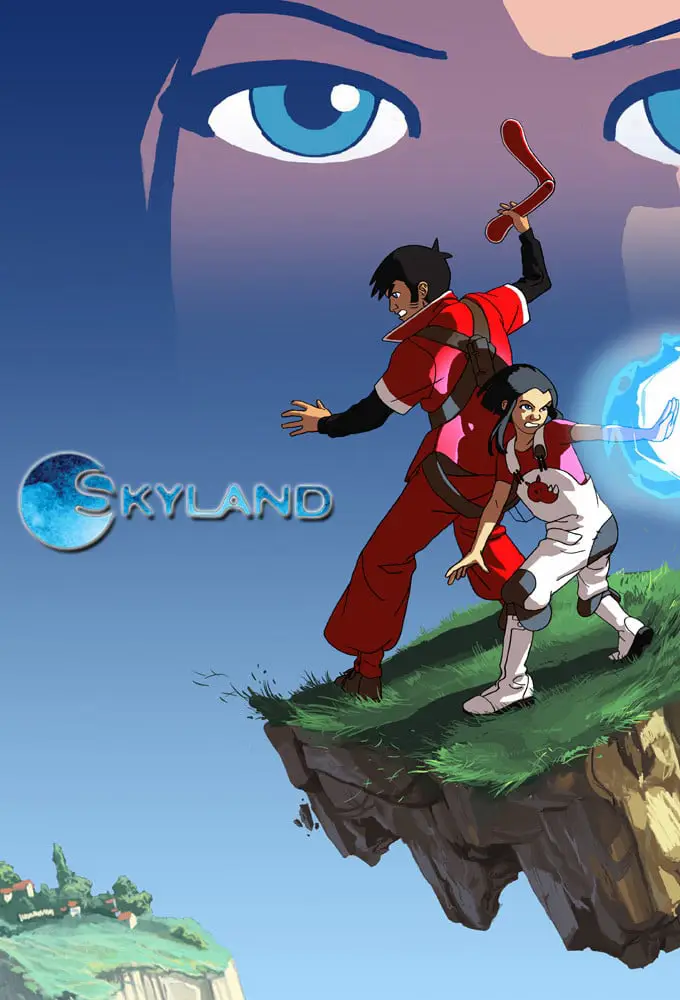

Heuliadenn tresadennoù-bev
Kontrollet eo ar blokoù douar-se gant ar Sfer, un diktatouriezh mennet da ren an holl. War ar blanedenn drailhet-se eo, e-lec’h ma vez ken ral an dour, e vez Mahad ha Lena o klask dispenn roudoù o mamm bet skrapet gant ar Sfer. Ur gwall rikour dezho eo spered dispont Mahad ha galloud dreistnatur Lena, ur Seijin yaouank anezhi, rak bras-divent ez eo ar Skyland
Skyland